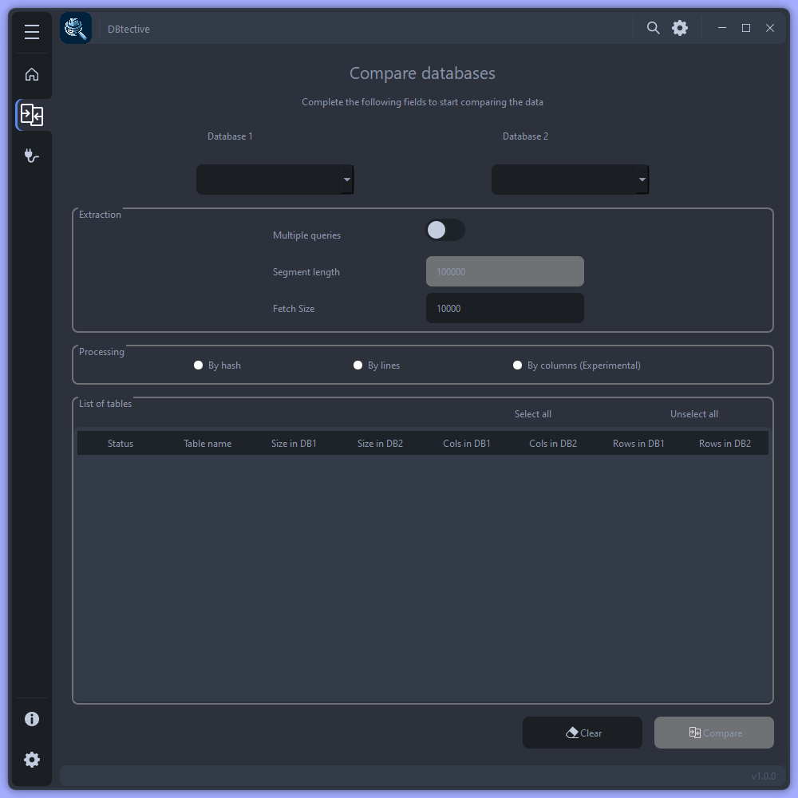

Comparer les données de 2 bases de données

Configuration des paramètres de comparaison
Paramètres |
Description |
|---|---|
Base de données 1 et 2 |
Choisisser les bases de données à comparer |
Requêtes multiples |
Définit la méthode d’extraction des données (requête unique si désactivée) |
Taille du segment |
La taille des segments de données à extraire à la fois (actifs s’ils sont multiplesles requêtes sont activées) |
Taille du fetch |
Nombre de lignes récupérées par le pilote dans un lot de la base de données |
Mode de traitement |
Choix de la méthode de traitement (voir traitement ci-dessous) |
Liste des tables |
Contenu d’une base de données (voir détails ci-dessous) |
Traitement
Par hachage
Chaque ligne extraite sera hachée et mettra à jour une valeur hachée. Pas de détails possible, il sera juste possible de savoir s’il y a eu des écarts.
Par lignes
Chaque ligne extraite sera ajoutée à une base de données temporaire (via duckDB)et la requête de comparaison sera lancée. Pour chaque table avec au moins un écart dans les données, un fichier au format csv sera généré.
Par colonnes
Identique au processus « Par lignes », mais en utilisant la « distance de Levenshtein »pour récupérer les données qui vont de pairs.
Il s’agit d’une distance mathématique entre 2 chaînes de caractères, définie comme le nombre minimum de modifications à un seul caractère (insertions, suppressions ou des substitutions) nécessaires pour changer une séquence en une autre.
Détails
Affiche la liste des tables communes entre les 2 bases de données sélectionnées.
En appuyant sur « DELETE » sur le clavier, la table associée à la ligne sélectionnée ne sera pas comparée. Pour ajouter à nouveau la table, appuyer sur « Retour arrière ».
Fichiers CSV
Chaque fichier CSV à traiter lors de la comparaison doit respecter les règles suivantes:
Le nom du fichier doit être identique
Au nom de la table à comparer pour une comparaison de base de données
Au nom de l’autre fichier pour une comparaison avec un autre fichier
Doit contenir les noms de colonnes dans l’en-tête
S’assurer de la cohérence des données exportées